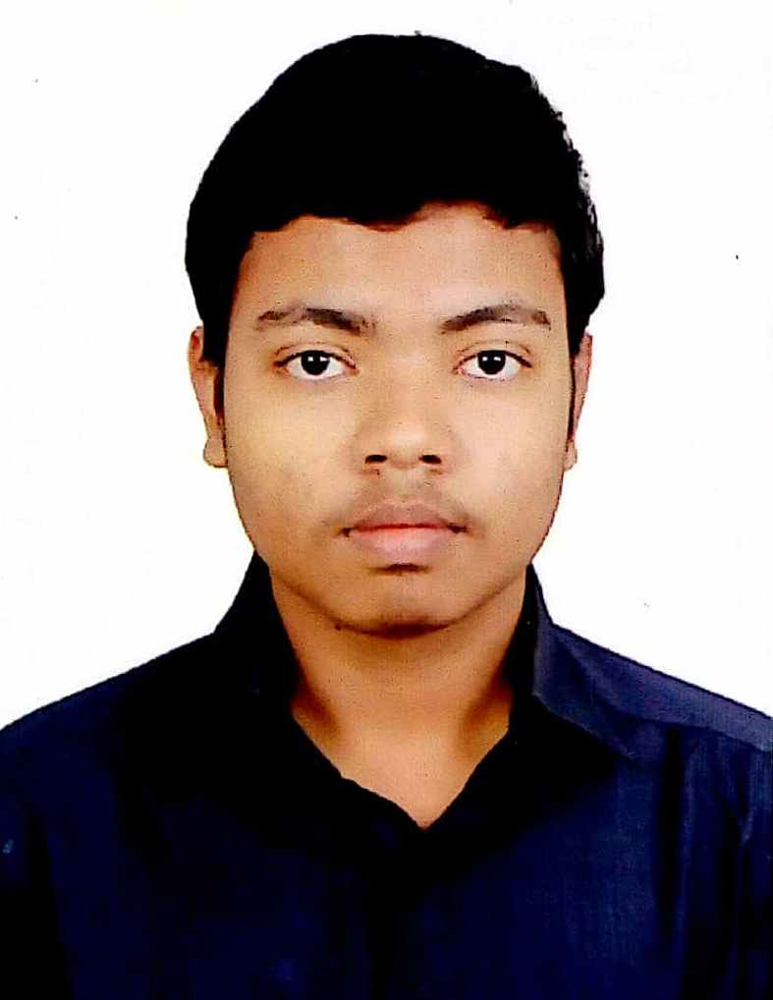

| Home | | Personal | | Competitive Programming |

I am a third year undergraduate student in the department of Computer Science & Engineering, Indian Institute of Technology Kharagpur.
I find mathematics and theoretical computer science the most interesting among all. I am a active participant & problem setter in Competitive Programming [ achievments & contributions ]. I am also fond of tricky math puzzles and brain teasers.
I am currently a General Secretary in Codeclub, the departmental society of Computer Sc. & Engg. IIT Kharagpur. I am also an Associate Member in Grimoire of Code the official competitive programming society of IIT Kharagpur. I have been a part of the problem-setting team and the organizing team of multiple competitive programming contests as a part of these societies.